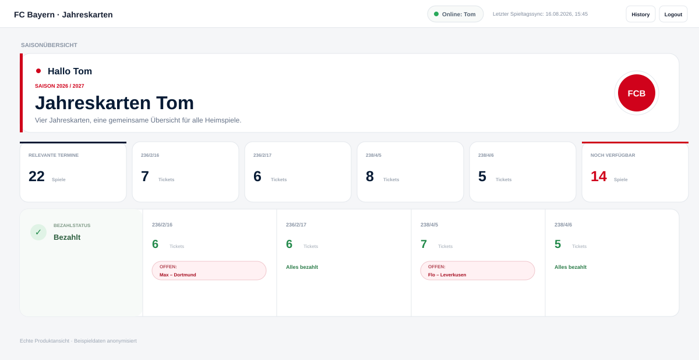
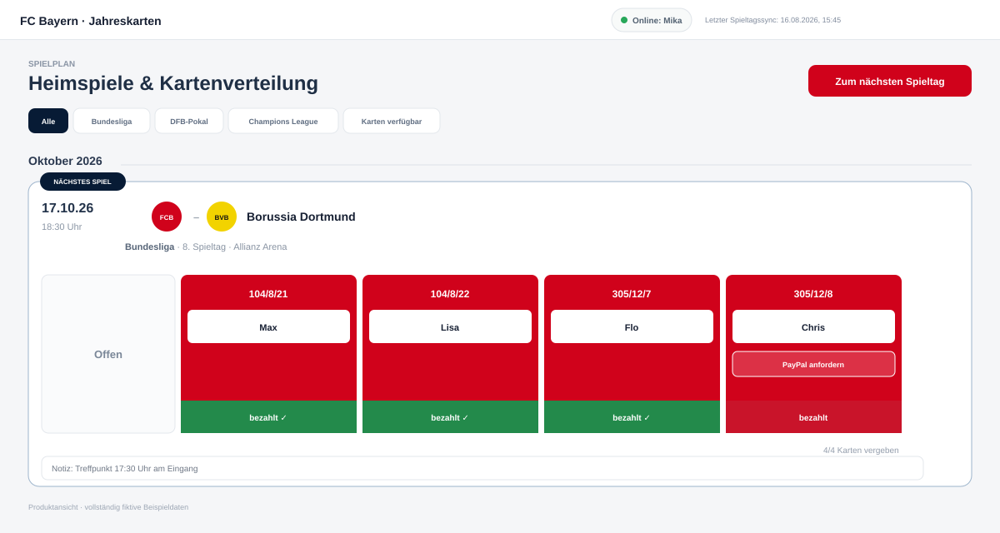
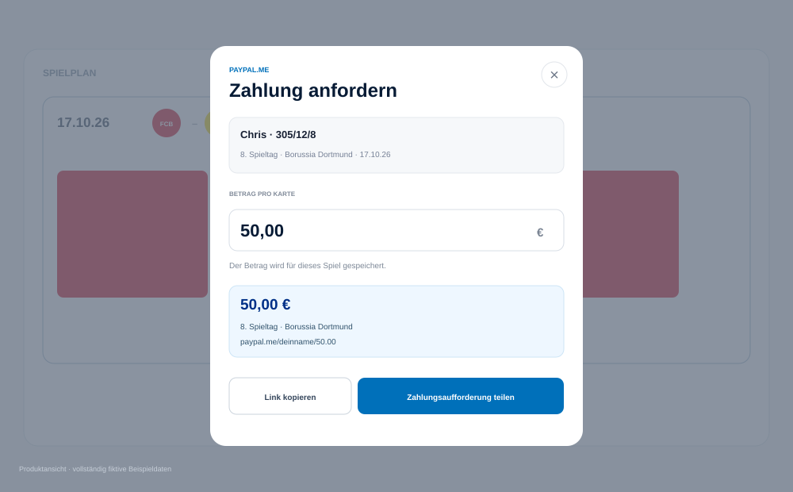

15 Homepage-Richtungen.
Eine SeasonCrew-CI.
Alle Varianten behalten die Raspberry/Charcoal-Farbwelt und den Markencharakter bei. Für die neuen V10-Weiterentwicklungen wird das aktuelle SeasonCrew-Logo verwendet; Produktbilder stammen ausschließlich aus den öffentlichen anonymisierten App-Ansichten.
Varianten 1–5
Erste DesignrundePremium / SaaS
Hochwertig, ruhig und produktorientiert.

V2Emotional / Stadium
Mehr Stadionenergie und Crew-Gefühl.

V3Product First
Funktionen und App stehen sofort im Zentrum.
V4Storytelling
Vom Gruppenchat-Chaos zur gemeinsamen Saison.

V5Minimal / Conversion
Reduziert, verständlich und CTA-stark.
Varianten 6–10
Zweite DesignrundeEditorial / Magazine
Redaktionelle Typografie und asymmetrische Bildstrecken.
V7Command Center
Dunkles Kontrollzentrum mit technischem SaaS-Feeling.
V8Season Journey
Vertikale Reise durch die Saison.
V9Split Screen
Fixierte Markenbotschaft und scrollende Produktgeschichte.
V10Bold Poster
Plakativ, kontrastreich und typografisch laut.
V10 Lab · A–E
Fünf gezielte Weiterentwicklungen deines FavoritenPremium Poster
Ruhiger, luxuriöser und mit stärkerer Produktinszenierung.
V10-BStadium Energy
Diagonalen, Marquee, Dynamik und maximale Matchday-Energie.
V10-CProduct Poster
Die App übernimmt die Hauptrolle mit umschaltbaren Produktansichten.
V10-DMinimal Bold
Radikal reduziert, große Botschaft, maximal klare Conversion.
V10-EEditorial Poster
Magazin-Ästhetik, asymmetrisches Raster und starke Typografie.